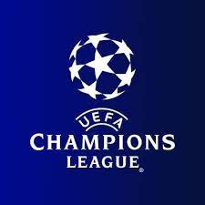
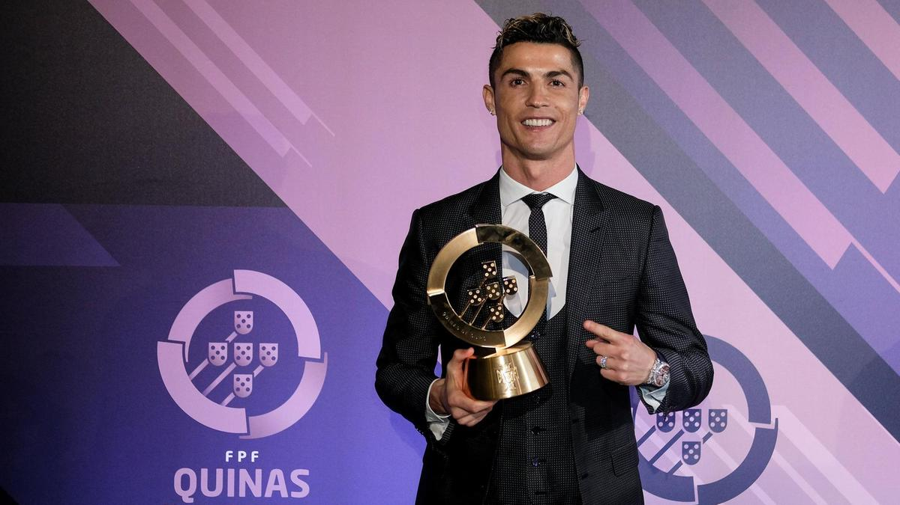

FOOTBALL
Football is a game that is played worldwide. There are a lot of leagues that take place every year and players from all over the world take part in it. There are 2 teams of 11 players each. It played in a proper field. There are many countries which play football such as Argentina, Spain and England. There are also many clubs such as Manchester United, Barcelona and Juventus.
Football Leagues:
Premier League
The Premier League, often referred to exonymously as the English Premier League or the EPL, is the top level of the English football league system. Contested by 20 clubs, it operates on a system of promotion and relegation with the English Football League. Manchester City won the 2021 Premier League.

Some Famous Football Players:
CHAMPIONS LEAGUE
The UEFA Champions League is an annual club football competition organised by the Union of European Football Associations and contested by top-division European clubs, deciding the competition winners through a round robin group stage to qualify for a double-legged knockout format, and a single leg final.

LIONEL MESSI
Lionel Andrés Messi is an Argentine professional footballer who plays as a forward and captains the Argentina national team. He is currently a free agent, having played all his professional career for La Liga club Barcelona, whom he captained since season 2015-2016.

Cristiano Ronaldo
Cristiano Ronaldo dos Santos Aveiro GOIH ComM is a Portuguese professional footballer who plays as a forward for Serie A club Juventus and captains the Portugal national team. He has won many leagues as well as national titles. He is popularly known as Ronaldo.
